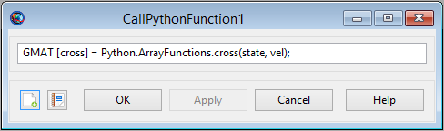

CallPythonFunction — Call a Python function
Python.PythonModule.PythonFunction()Python.PythonModule.PythonFunction(input_argument[,input_argument]...)[output_argument[,output_argument]...]=Python.PythonModule.PythonFunction[output_argument[,output_argument]...]=Python.PythonModule.PythonFunction(input_argument[,input_argument]...)
GMAT provides a special command that allows you to call a function written in the Python language. In the GUI, this is the CallPythonFunction command.
In the syntax description, the preface Python is a keyword used to tell GMAT that the scripting is calling into the Python system. The PythonModule identifies a Python file, with the name PythonModule.py, containing the function that is to be called. PythonFunction is the function that is called inside of that file. Arguments can be passed into and returned from the function, following the guidelines described below. See Remarks for details.
When a Python function is called, GMAT loads the Python engine in the background. This functionality requires that a compatible installation of Python be properly installed and configured on your system. Once GMAT has loaded the engine, it remains in memory until GMAT is closed.
|  |
The CallPythonFunction GUI provides a single text entry field used to enter the Python function as a line of script.
The syntax for the CallPythonFunction is as described in the Script Syntax section above. GMAT's Python interface accepts Variables, Strings, numerical object parameters, and one dimensional arrays as input parameters. It returns Variables, Arrays, and Strings, either as a single value or as a collection of values. The interface calls into Python scripts, identified by the PythonModule field, that define the function to be accessed. The receiving function is responsible for validating the inputs, based on the type conversions described in the Remarks below.
When the user accepts the entries on the panel, GMAT does not perform any validation of input or output arguments. This validation is performed when the mission is run, after Python has been started.
The input arguments (input_argument
values in the syntax description) can be any of the following types:
resource parameter of real number type (e.g.
Spacecraft.X)
resource parameter of string type (e.g.
Spacecraft.UTCGregorian)
One dimensional Array, String, or Variable resource
Array resource element
The output arguments (output_argument
values in the syntax description) can be any of the following types:
Array, String, or Variable resource
Data type conversion is performed for the following data types when values are passed between Python and GMAT. When data is passed from GMAT to Python as input arguments, the following conversions occur.
| GMAT | Python |
|---|---|
real number (e.g. Spacecraft.X, Variable, Array element) | float |
string (e.g.
| str |
Array resource | memoryview |
When data is passed from Python to GMAT as output arguments, the following conversions occur.
| Python | GMAT |
|---|---|
str | String |
float | real number |
float array | Array resource |
Call a simple Python function:
Create Variable x y
BeginMissionSequence
x = 1
y = Python.MyMath.sinh(x)Call a multiple input and output Python function:
Create Spacecraft aSat
Create ImpulsiveBurn aBurn
Create Propagator aProp
Create Variable a_target mu dv1 dv2
mu = 398600.4415
BeginMissionSequence
% calculate burns for circular Hohmann transfer (example)
[dv1, dv2] = Python.MyOrbitFunctions.CalcHohmann(aSat.SMA, a_target, mu)
% perform first maneuver
aBurn.Element1 = dv1
Maneuver aBurn(aSat)
% propagate to apoapsis
Propagate aProp(aSat) {aSat.Apoapsis}
% perform second burn
aBurn.Element1 = dv2
Maneuver aBurn(aSat)